pandas: Managing Tables and Time Series#

pandas organises data into labelled tables. It helps us inspect data types, select observations, handle missing entries, combine sources, and summarise time series.
Explore the official introductory tutorials and user guide.
Your task#
Create 05-pandas.ipynb. Analyse a small fictional building dataset, then practise time-series operations on a short weather table. Finally, download historical weather for Groningen and apply the same inspection steps.
Complete Python Fundamentals and NumPy first. Select Python (managing-data) as the kernel. Run examples in order; no capacity-factor calculation is required for this lesson.
Learning objectives#
Distinguish a Series from a DataFrame.
Select rows by label or position and filter by conditions.
Check types and missing values before calculating.
Create new columns and summarise groups.
Combine tables without unintended duplicates.
Use time indexes, resampling, and file exports.
Import pandas#
import pandas as pd
import numpy as np
import matplotlib.pyplot as plt
from pathlib import Path
pd is the conventional alias. pandas builds on numerical and plotting tools, but adds labelled rows and columns.
Series and DataFrames#
A Series is one labelled collection. A DataFrame combines columns sharing an index; each column can have its own type.
buildings = pd.DataFrame({
"building": ["A", "B", "C"],
"sector": ["Residential", "Education", "Residential"],
"area_m2": [100.0, 300.0, 150.0],
"annual_demand_kwh": [3000.0, 15000.0, 6000.0],
"construction_year": [1995, None, 2010],
}).set_index("building")
print(buildings)
print(buildings["area_m2"])
print(buildings[["area_m2", "annual_demand_kwh"]])
One pair of brackets with a column name returns a Series. A list of names inside brackets returns a DataFrame. The index contains building identifiers, not row numbers.

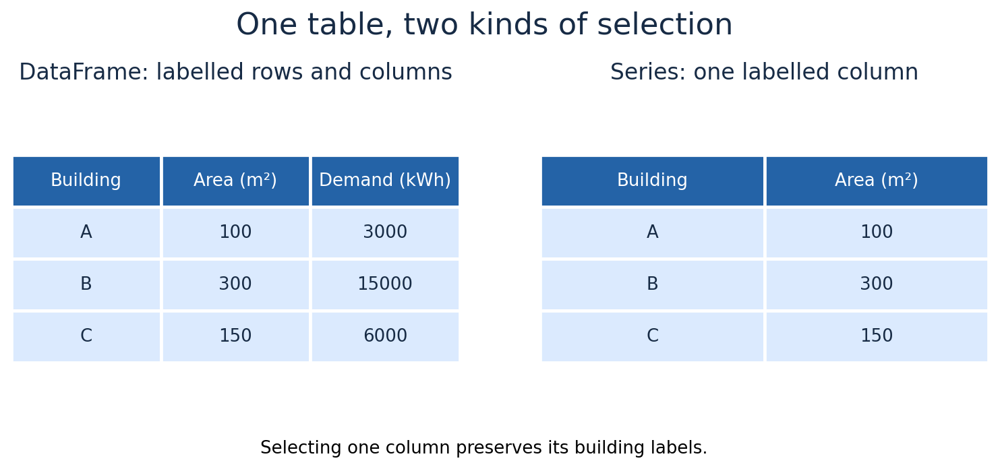
Fig. 7 A DataFrame stores multiple columns; selecting one named column returns a labelled Series.#
Inspect types and missing entries#
buildings.info()
print(buildings.dtypes)
print(buildings.isna().sum())
print(buildings.describe())
Missing construction year is different from year zero. Text such as "3000" is also different from the number 3000. Types determine how calculations, sorting, and comparisons behave.
text_values = pd.Series(["3000", "6000", "unknown"])
converted = pd.to_numeric(text_values, errors="coerce")
print(converted)
print(converted.isna())
Here errors="coerce" converts invalid text to missing values. Inspect those entries instead of treating conversion as proof that the data are correct. Use errors="raise" if invalid input should stop the calculation.

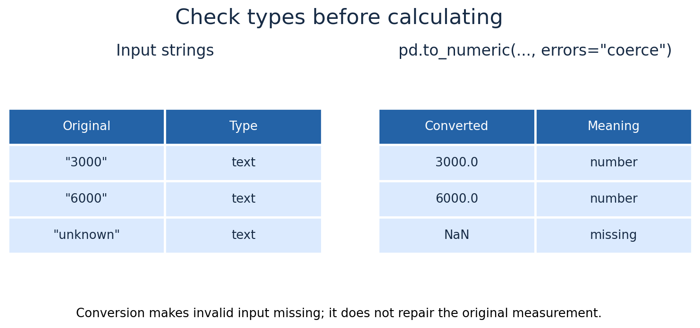
Fig. 8 Numeric conversion distinguishes valid numbers from invalid text that becomes missing.#
Select rows and columns#
print(buildings.loc["B", "annual_demand_kwh"])
print(buildings.iloc[1, 2])
print(buildings.loc[["A", "C"], ["area_m2", "annual_demand_kwh"]])
.loc uses labels; .iloc uses zero-based positions. Positions can change when a table is sorted, so identifiers are often safer for selecting a particular building.

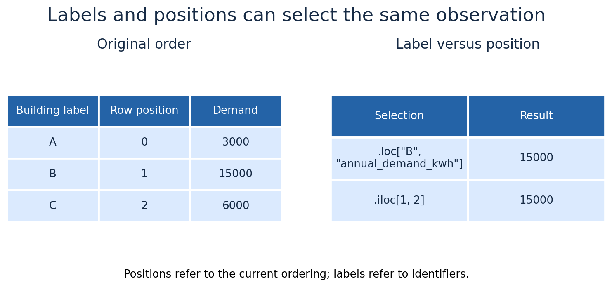
Fig. 9 Both expressions select building B before sorting; their meanings differ.#
Filter and sort#
selected = buildings.loc[
(buildings["sector"] == "Residential")
& (buildings["annual_demand_kwh"] > 4000)
]
print(selected)
print(buildings.sort_values("annual_demand_kwh", ascending=False))
Only building C meets both conditions. Use parentheses around conditions and & for element-wise AND, | for OR, and ~ for negation.

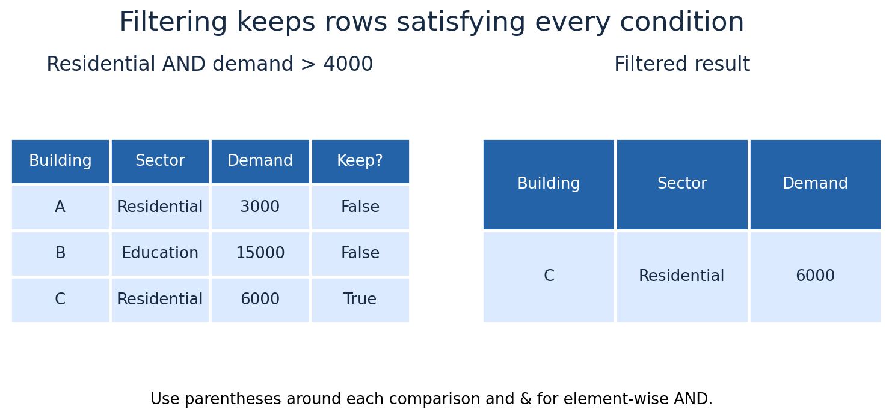
Fig. 10 Only C satisfies both conditions. Sorting is a separate operation that changes row order.#
Create columns with vectorised operations#
buildings["demand_kwh_m2"] = (
buildings["annual_demand_kwh"] / buildings["area_m2"]
)
print(buildings[["annual_demand_kwh", "area_m2", "demand_kwh_m2"]])
The division is performed for corresponding buildings, producing 30, 50, and 40 kWh/m² per year. This indicator is electricity demand per floor area, not a building’s heating efficiency.
For custom classifications, a function can be applied to a Series:
def classify_demand(value):
return "Above threshold" if value > 40 else "At or below threshold"
buildings["demand_group"] = buildings["demand_kwh_m2"].apply(classify_demand)
print(buildings["demand_group"])
Prefer direct vectorised expressions for simple arithmetic; .apply() is useful when a custom function improves clarity.

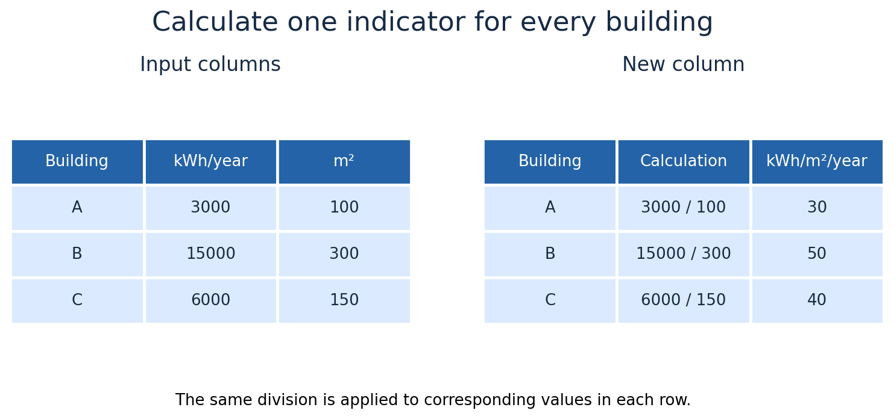
Fig. 11 Annual demand divided by floor area produces an intensity for each building.#
Handle missing data deliberately#
known_years = buildings.dropna(subset=["construction_year"])
print(known_years)
This removes B from the new subset, without deleting it from buildings. Removing incomplete rows also removes their other valid information; it changes the population analysed.
For a numeric demonstration:
example = pd.Series([2.0, np.nan, 4.0])
print(example.mean())
print(example.fillna(0).mean())
pandas means skip missing entries by default: the first result is 3.0, based on two values. Filling with zero gives 2.0 and introduces a different assumption. Forward filling or interpolation also require a reason; neither recovers a measurement.

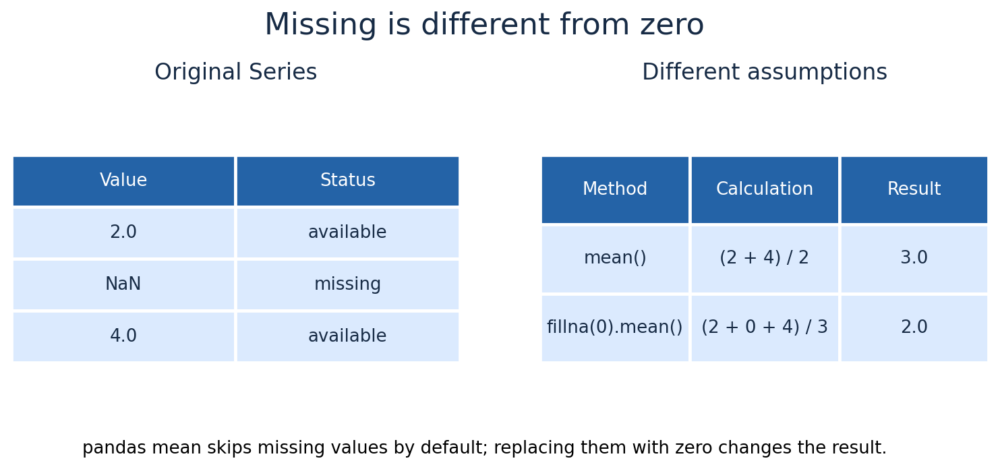
Fig. 12 Skipping a missing entry and assuming it equals zero answer different questions.#
Group and aggregate#
sector_summary = buildings.groupby("sector").agg(
number_of_buildings=("area_m2", "size"),
total_area_m2=("area_m2", "sum"),
total_demand_kwh=("annual_demand_kwh", "sum"),
)
print(sector_summary)
Grouping collects rows with the same sector and summarises each group. Residential demand totals 9,000 kWh; education demand totals 15,000 kWh. Aggregation does not create additional observations.

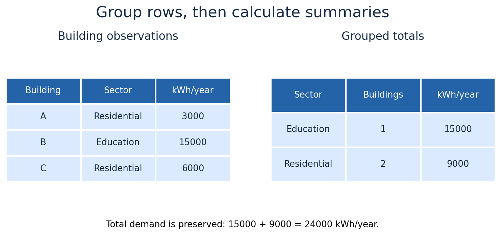
Fig. 13 Grouping combines A and C as residential while keeping education separate.#
Align and merge tables#
pandas matches index labels when combining Series, rather than relying only on position:
first = pd.Series([10, 20], index=["A", "B"])
second = pd.Series([2, 1], index=["B", "A"])
print(first + second)
The output is A = 11 and B = 22.
To attach metadata by a shared identifier:
metadata = pd.DataFrame({
"building": ["C", "A", "B"],
"roof_type": ["Pitched", "Flat", "Flat"],
})
combined = buildings.reset_index().merge(
metadata, on="building", how="left", validate="one_to_one"
)
print(combined[["building", "annual_demand_kwh", "roof_type"]])
The merge keeps the left table’s buildings and attaches matching roofs. validate="one_to_one" rejects duplicate keys that could multiply rows unintentionally. Check missing matches as well.

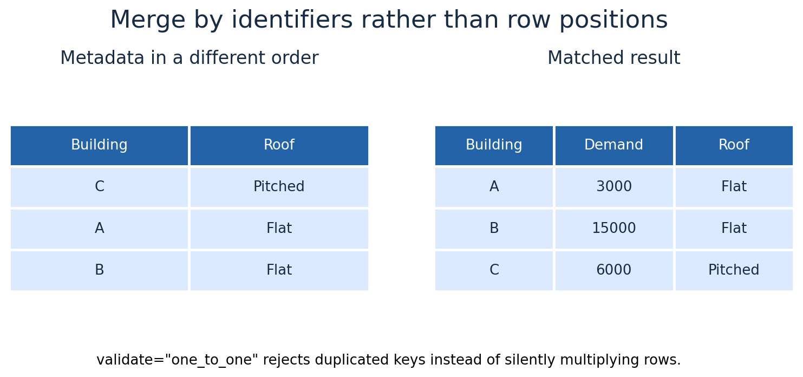
Fig. 14 A merge attaches roof attributes to their matching building identifiers.#
Time indexes and resampling#
Use a small fictional weather table to learn the operations before downloading real data:
time = pd.date_range("2025-06-01", periods=6, freq="h", tz="UTC")
practice_weather = pd.DataFrame({
"wind_ms": [4.0, 6.0, 8.0, 5.0, 3.0, 4.0],
"irradiance_wm2": [0.0, 0.0, 0.0, 20.0, 80.0, 160.0],
}, index=time)
practice_weather.index.name = "timestamp"
print(practice_weather)
print(practice_weather.loc["2025-06-01 01:00":"2025-06-01 03:00"])
two_hour_means = practice_weather.resample("2h").mean()
print(two_hour_means)
Each two-hour mean combines two records. Wind means are 5.0, 6.5, and 3.5 m/s. Resampling changes the time grouping; it does not increase the original resolution or reveal within-hour variation.
For mean irradiance over one-hour intervals, accumulated irradiation is:
practice_weather["irradiation_kwh_m2"] = (
practice_weather["irradiance_wm2"] * 1.0 / 1000
)
print(practice_weather["irradiation_kwh_m2"].resample("2h").sum())
Irradiance is power per area (W/m²); irradiation is energy per area (kWh/m²). Average power is averaged, while interval energy is summed.

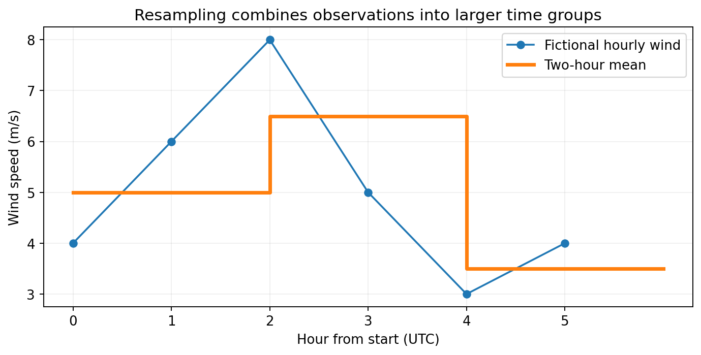
Fig. 15 Six fictional hourly values form three two-hour groups with means 5.0, 6.5, and 3.5 m/s.#
Download weather for Groningen#
The following example requests ERA5-based historical weather through Open-Meteo. The result is gridded model data for a point near Groningen, not a station measurement or a municipality-wide average.
import json
from urllib.parse import urlencode
from urllib.request import urlopen
parameters = {
"latitude": 53.2194,
"longitude": 6.5665,
"start_date": "2025-01-01",
"end_date": "2025-12-31",
"hourly": "temperature_2m,wind_speed_100m,shortwave_radiation,global_tilted_irradiance",
"models": "era5",
"wind_speed_unit": "ms",
"timezone": "GMT",
"tilt": 35,
"azimuth": 0,
}
url = "https://archive-api.open-meteo.com/v1/archive?" + urlencode(parameters)
data_directory = Path("data")
data_directory.mkdir(exist_ok=True)
raw_file = data_directory / "groningen_2025_weather.json"
if raw_file.exists():
payload = json.loads(raw_file.read_text(encoding="utf-8"))
else:
with urlopen(url, timeout=120) as response:
payload = json.load(response)
raw_file.write_text(json.dumps(payload, indent=2), encoding="utf-8")
weather = pd.DataFrame(payload["hourly"]).rename(columns={
"time": "timestamp", "temperature_2m": "temperature_c",
"wind_speed_100m": "wind_100m_ms", "shortwave_radiation": "ghi_wm2",
"global_tilted_irradiance": "poa_wm2",
})
weather["timestamp"] = pd.to_datetime(weather["timestamp"], utc=True)
weather = weather.set_index("timestamp").sort_index()
print(payload["hourly_units"])
print(weather.head())
The request uses wind at 100 m in m/s, and a 35° tilted surface facing south (API azimuth 0°). Radiation represents the preceding hour’s mean; wind is reported at the timestamp. Preserve the raw response and change the cache filename if request settings change.
Validate before summarising:
expected = pd.date_range("2025-01-01", "2026-01-01", freq="h",
inclusive="left", tz="UTC")
assert weather.index.is_unique, "Duplicate timestamps"
assert weather.index.equals(expected), "Unexpected hourly coverage"
assert not weather.isna().any().any(), "Investigate missing entries"
print(weather.describe())
print(weather[["wind_100m_ms", "ghi_wm2"]].resample("MS").mean())
UTC avoids daylight-saving ambiguity in the downloaded index. For local clock-hour patterns use .tz_convert("Europe/Amsterdam"). A complete non-leap year contains 8,760 hourly records.
No real Groningen weather chart is supplied as a substitute for the download. The time-series illustration above uses only the explicitly fictional practice values.
Reshape grouped results#
practice_weather["hour_group"] = np.where(
practice_weather.index.hour < 3, "Earlier", "Later"
)
long_summary = practice_weather.groupby("hour_group")[["wind_ms", "irradiance_wm2"]].mean().stack()
print(long_summary)
print(long_summary.unstack())
Stacking places variable names in an index level. Unstacking moves that level back into columns. The layout changes, but the underlying summary values do not.

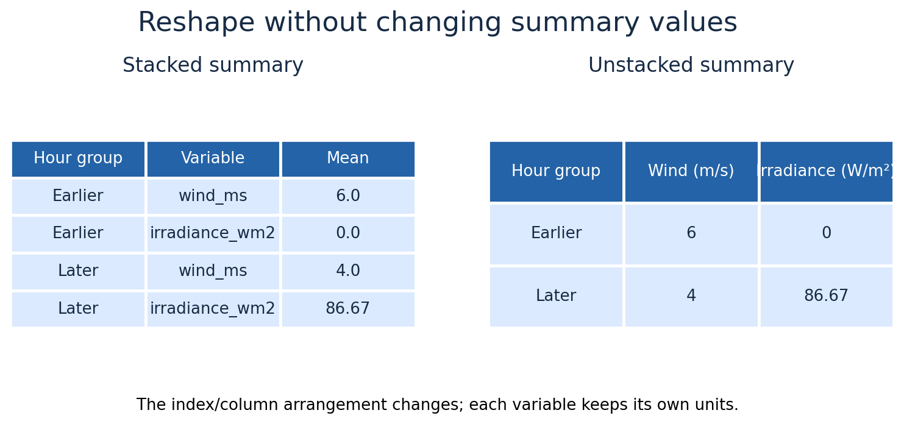
Fig. 16 unstack() moves the variable index level back into columns; these are fictional practice means.#
Plot and export#
fig, ax = plt.subplots(figsize=(6, 4), layout="constrained")
sector_summary["total_demand_kwh"].plot.bar(ax=ax, color="tab:blue")
ax.set(xlabel="Sector", ylabel="Annual electricity demand (kWh)",
title="Fictional building inventory")
ax.tick_params(axis="x", rotation=0)
plt.show()
output_directory = Path("outputs")
output_directory.mkdir(exist_ok=True)
buildings.to_csv(output_directory / "building_attributes.csv", index_label="building")
loaded = pd.read_csv(output_directory / "building_attributes.csv", index_col="building")
print(loaded.dtypes)
fig.savefig(output_directory / "sector_demand.png", dpi=300, bbox_inches="tight")
CSV does not retain every type or metadata detail. Restore date indexes explicitly after reading time-series files and inspect missing values again.

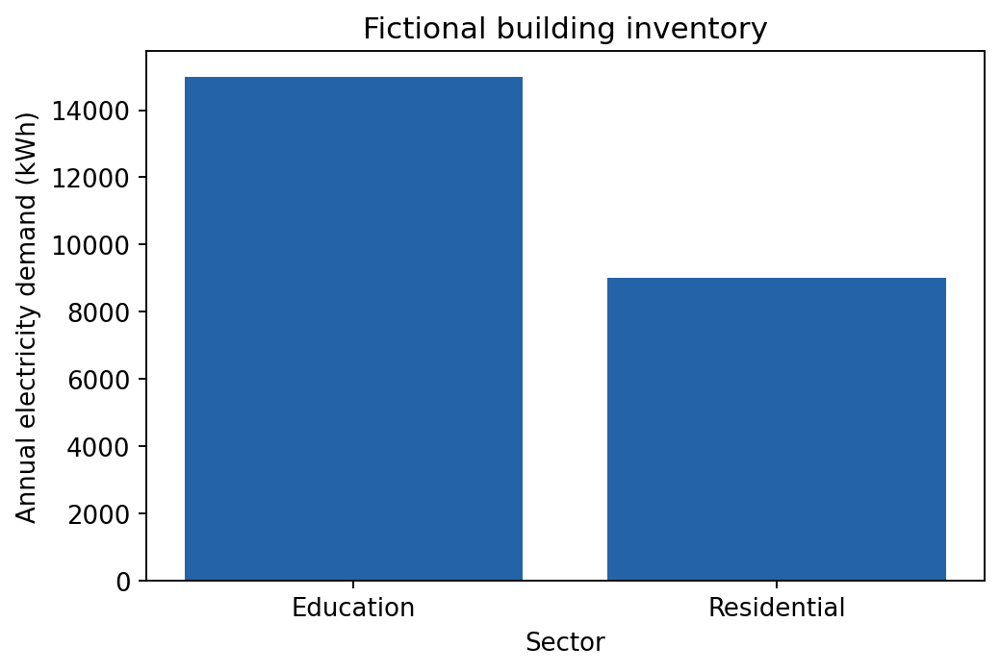
Fig. 17 Expected bar chart: education uses 15,000 kWh/year and residential uses 9,000 kWh/year.#
Optional practice#
Select and calculate#
Add a fourth fictional building and filter residential buildings above a chosen demand threshold.
Calculate demand per area and explain the units.
Compare
.locand.ilocbefore and after sorting.
Missing values and merges#
Remove a roof record from the metadata and inspect the left merge.
Duplicate a metadata key and explain why validation rejects it.
Compare dropping a missing observation with replacing it by zero.
Time series#
Resample the practice weather to three-hour means.
Calculate accumulated irradiation over the six-hour period.
Inspect a week of the downloaded Groningen data and count missing entries.
Explain why mean irradiance and total irradiation answer different questions.
Check your work#
Restart the kernel and run all visible cells. Building demand should total 24,000 kWh; grouped totals should preserve that sum. The practice dataset is synthetic; only the API response represents historical weather estimates.
Further reading#
When sharing weather data or results, acknowledge Open-Meteo and the underlying ERA5 source and follow applicable attribution requirements.